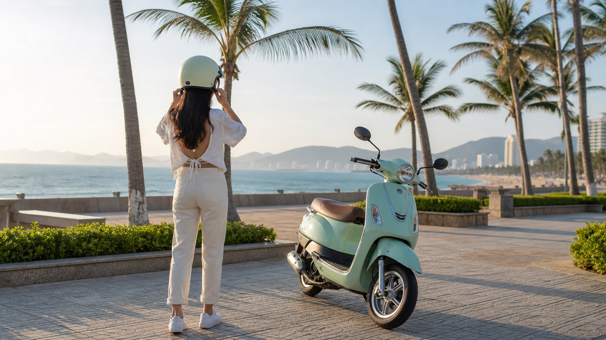

Первый байк нужен не для того, чтобы привыкать к лишнему весу, ручному переключению или неожиданным мелочам. Для спокойных поездок по Нячангу обычно выбирают автомат 50cc: сел, плавно добавил газ и сосредоточился на дороге.
На автомате не нужно думать о сцеплении и передачах в потоке, на светофорах и на медленной парковке. Это не делает езду «автоматически безопасной», но уменьшает количество действий, которые новичок делает одновременно.
Перед выбором сядь на байк, поставь обе ноги на землю и возьмись за руль. Проверь, не тянет ли корпус вперёд, удобно ли нажимать тормозные ручки, не мешают ли зеркала и чувствуешь ли ты вес байка при небольшом перекатывании. Красивый цвет — плюс, но удобная посадка важнее.
Не начинай знакомство с байком с оживлённой дороги. Сначала потренируй плавный старт, торможение и медленные повороты в спокойном месте. Всегда надевай шлем, оставляй запас дистанции и не пытайся ехать быстрее, чем успеваешь смотреть по сторонам.
Категория 49,5/50cc — именно та, которую обычно ищут люди без мотоциклетных прав. Но правила движения, возраст и условия пребывания нужно проверять для своей ситуации отдельно. Подробно мы разобрали это в статье про права и 50cc во Вьетнаме.
Для первого байка стоит выбирать не «самый яркий» вариант, а тот, где понятны документы, состояние и подготовка. Сравнить автоматы и механику можно в отдельном материале.